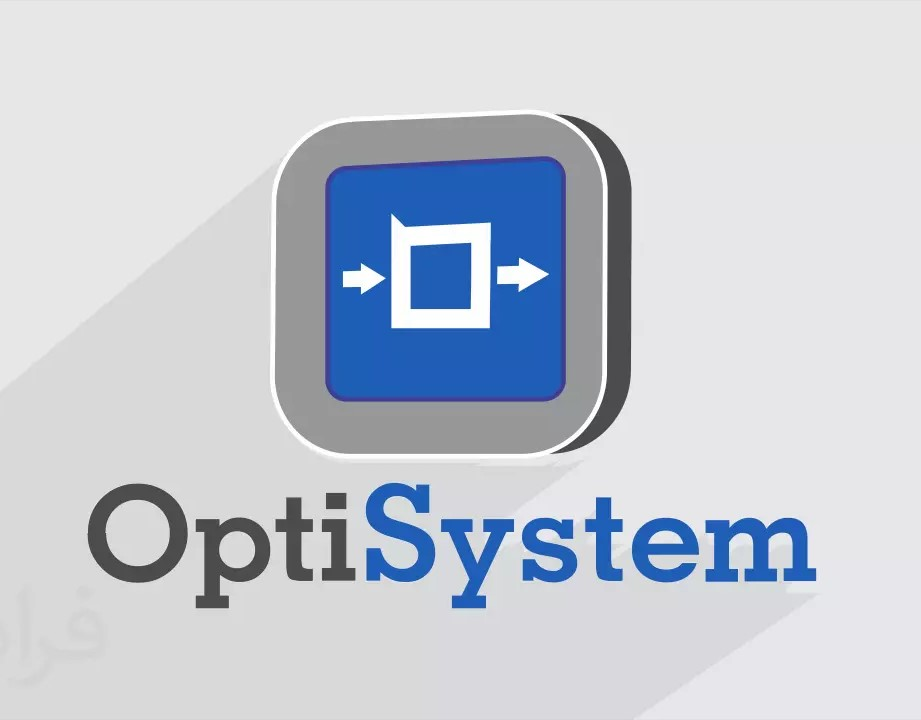

Prácticas Optisystem
Práctica I
Tema: Conexión de fibra óptica: Empalmes, acopladores y aisladores
Objetivos: Simular una conexión de fibra óptica en el Software OptiSystem. Modificar el parámetro de perdida de inserción y analizar la potencia resultante
Práctica II
Tema: Multiplexación por División de Longitud de Onda Densa DWDM
Objetivos: Simular en el Software Optisystem una simulación que nos permita visualizar la conversión de longitud de onda utilizando el componente SOA de banda ancha.
Práctica III
Tema: Multiplexación por División de Longitud de Onda Densa DWDM
Objetivos: Realizar un programa permita la visualización la multiplexación de fibra óptica en el software Optisystem.
Práctica IV
Tema: Redes de fibra óptica
Objetivos: Simular una red de fibra óptica en el software Optisystem.
Práctica V
Tema: Redes de fibra óptica
Objetivos: Simular una red de fibra óptica en el software Optisystem.
Práctica VI
Tema: Fiber To The Home (FTTH)
Objetivos: Simular una red Fiber To The Home en el software de simulación de Optisystem
Práctica VII
Tema: El diodo emisor de luz
Objetivos: Analizar el funcionamiento de un láser en un sistema de comunicaciones
Práctica VIII
Tema: Funcionamiento de un láser en un sistema decomunicaciones
Objetivos: Simular una red de fibra óptica con una fuente láser y cable de fibra monomodo en Optisystem
Práctica IX
Tema: Detectores Ópticos
Objetivos: Simular en el Software Optisystem una red óptica que nos permita visualizar una conexión de fibra óptica. Comprender el funcionamiento de los detectores PIN y APD mediante la simulación de un enlace óptico en OptiSystem. Analizar los resultados del BER para un enlace óptico con detector PIN y con detectorAPD.
Práctica X
Tema: Ruido presente en los fotodetectores y fotodiodos
Objetivos: Desarrollar un circuito en Optisystem que demuestre la inserción de ruido en un sistema de telecomunicaciones. Variar los parámetros en el generador de ruido y analizar los diagramas obtenidos de los distintos instrumentos de medición. Elaborar un algoritmo en Matlab que permita calcular los valores del ruido presente en un sistema de Telecomunicaciones.
Práctica XI
Tema: Redes ópticas, PDH. Redes de Alta Velocidad SDH/SONET
Objetivos: Realizar un programa que me permita simular dicha estructura investigada. Visualizar los resultados en el software OptiSystem. Analizar los datos obtenidos de la red de comunicación óptica SDH/SONET
Práctica XII
Tema: Redes ópticas, PDH. Redes de Alta Velocidad SDH/SONET
Objetivos: Realizar un programa que me permita simular dicha estructura investigada. Visualizar los resultados en el software OptiSystem. Analizar los datos obtenidos de la red de comunicación óptica SDH/SONET
Práctica XIII
Tema: Multiplexación por División de Longitud de Onda
Objetivos: Crear y simular un sistema de comunicaciones con fibra óptica con MUX y DEMUX WDM.